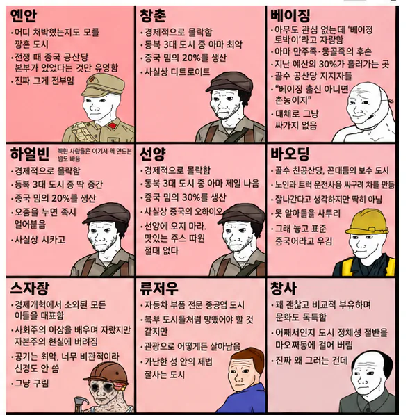

창춘 하얼빈 선양은 대체 무슨일이..

창춘 하얼빈 선양은 대체 무슨일이..
맞음 양신하이네
난징은 ㅅㅂ ㅋㅋㅋㅋㅋㅋㅋㅋ
홍콩사람이 ㄹㅇ 싸가지 전세계에서 젤 없고
나머지 중국 착하긴함
그러니 공산당 아래에서 반발없이 사나싶고
아는 지역만 봄
신장은 수용소에서 고문, 정신파괴하는 소리임?
무틀딱이 이해하기쉽게 한국무협지명으로 해다오..
시안은 대도시는 맞는데 뭔가 어수선하고 정리가 안된 느낌이 있어서 돌아다니기 꺼려졌음
중국놈이 만들었나보네
난창은 도대체 머하는 곳일까 ㅋㅋㅋㅋ
남창 개웃기네 ㅋㅋ 역시 폭동의 도시
창춘 하얼빈 션양은 다 맞는 말이네
동북 3성은 거기 있는 대학으로 유학온 남부 놈들도 대놓고 야만 이라고 놀리는 동네인데
가난한 중국 이미지 생각하면 딱 맞음
허허벌판에 빈땅, 공장, 밭 밖에 없음
물가는 무지 쌈
너가 어떤놈을 말하는지는 모르겠지만 한두놈이 아님 ㅋㅋㅋㅋㅋㅋ대표적으로 양신하이라는 새끼가 있는데 이새끼가 죽인 사람만 70명 가까이 되고 성폭행만 20명 넘음, 이새끼 말고도 10명 내외로 죽인 연쇄살인범들이 여러명 있고 인구가 많은 지역이라서 지역깡패가 많고 치안도 나쁨, 그냥 이지역 새끼들은 게으르고 성실하지 못하다는 인식이 큼 ㅋㅋㅋ